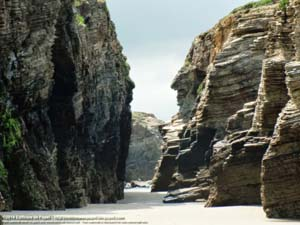
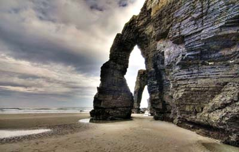
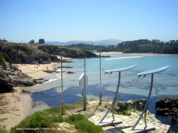

La Bilbaína
Tu hotel en Vegadeo


El Mar Cantábrico en su esplendor.
 
La Playa de las Catedrales, debe su nombre a las peculiares esculturas talladas en la roca por la fuerza del Mar Cantábrico, originalmente llamada Playa de Augas Santas, adopta este sobrenombre por el parecido de las citadas esculturas de roca con las catedrales góticas.
La zona está rodeada de otras pequeñas playas de arena blanca y oleaje moderado que en época estival son más apropiadas para el baño. Pero en general, este monumento de la naturaleza se encuentra siempre muy visitado, con lo que te recomendamos concertar previamente una reserva en nuestro hotel si tienes planeado hacer una visita a esta maravilla natural que sin duda no deja a ningun visitante impasible.

 Conocida como la playa del surf en Asturias, La playa de Tapia de Casariego, acoge una de las citas anuales más importantes de este deporte. Cada año por Semana Santa, se dan cita aficionados y profesionales del surf en uno de los campeonatos más prestigiosos del circuito español.
Conocida como la playa del surf en Asturias, La playa de Tapia de Casariego, acoge una de las citas anuales más importantes de este deporte. Cada año por Semana Santa, se dan cita aficionados y profesionales del surf en uno de los campeonatos más prestigiosos del circuito español.
Otra de las joyas del occidente asturiano,La Concha de Artedo, un arenal de gran extensión, al que se accede tras atravesar un bosque cantábrico endémico. Próxima a una de las localidades más famosas de Asturias, el pueblo marinero de Cudillero. Premio al pueblo ejemplar de Asturias en el año 1992 y de obligada visita.
Por sus características orográficas el litoral asturiano alberga muchas otras playas, pues lo recortado de su costa, facilila la acumulación natural de arenales y pequeñas calas donde el visitante puede disfrutar de pequeños rincones en la costa lejos de la masificación, incluso en épocas estivales. Así playas como la Playa de Barayo, a poco más de 10 kilómetros de Navia de un característico color negruzco debido a la gran formación pizarrosa que la nutre de minerales, o la Playa de Frejulfe, un bonito rincón declarado Monumento Natural debido a la proliferación de especies de naturales protegidas que visitan la playa como el Ostrero o el Cormorán ceñudo. Además el fuerte oleaje también permite la práctica del surf.